Depuis 1948
« En 1948, sous l'impulsion de Paul Bouvy (ancien coureur pro) et Pierre Marie, le club est relancé sous le nom du Vélo Club Massy Palaiseau. »
Le club est relancé sous le nom de Vélo Club Massy Palaiseau par Paul Bouvy (ancien coureur pro) et Pierre Marie.
Les titres de champion d'Henri Lemoine (1938, 1942, 1945, 1950–1952) sont à l'origine des trois pois du maillot du club, ajoutés à sa tenue bleue à bande blanche.
Le club accueille l'arrivée de la course professionnelle Bordeaux-Paris.
Création de la section cyclotourisme.
Création d'une école de cyclisme pour les jeunes à partir de 10 ans.
Lancement d'une section cyclosport (interrompue depuis).
Création de la section BMX, toujours active aujourd'hui.
La longue sortie Massy-Coulomb est arrêtée ; l'école de cyclisme ferme au début des années 2010.
Aujourd'hui
Massy-Coulomb (jusqu'à 180 km, historique) et le Rallye Massy-Breuillet (jusqu'à 90 km), en plus des sorties familiales, week-ends de mai et moments conviviaux du club.